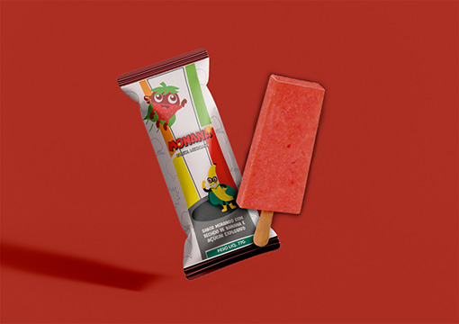
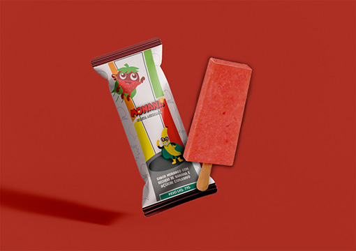

]
]


 ]
]


 

GOTOSO - Projeto Gráfico de embalagem para a empresa YOKI, para o lançamento de um novo produto: Suco de Soja de saquinho. Esse produto deveria ser chamativo para crianças. Com o intuito de manter uma consonância com a marca, mantive a mascote já utilizado por eles: o Crocodilo. E o nome escolhido foi GOTOSO, por ser fácil de compreensão, similar a fala dos pequenos e memorável.
PETIT - Projeto Gráfico de embalagem para a empresa Doce de Minas, para o lançamento de sua nova linha: PETIT. Essa linha irá incluir a venda de Biscoitos Amanteigados, Biscoitos recheados com Doce de Leite e Cookies.
Projeto Gráfico Editorial de uma obra literária clássica.
Projeto Gráfico de um logo pessoal.